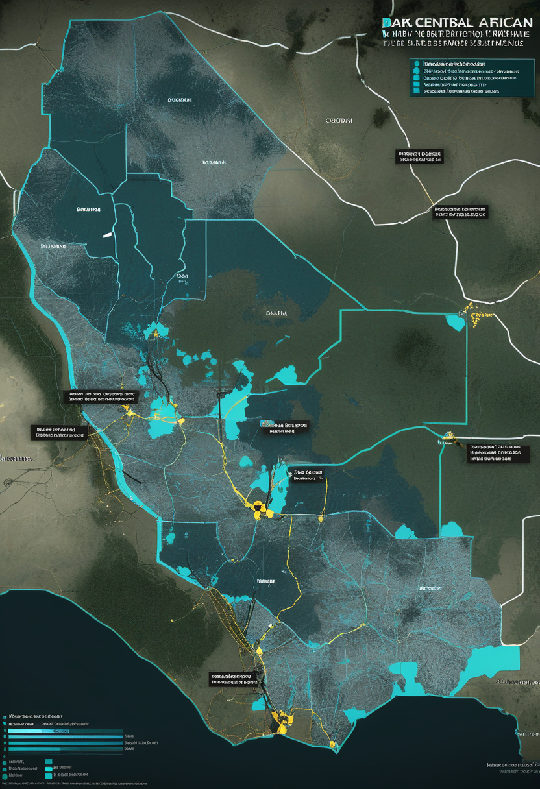
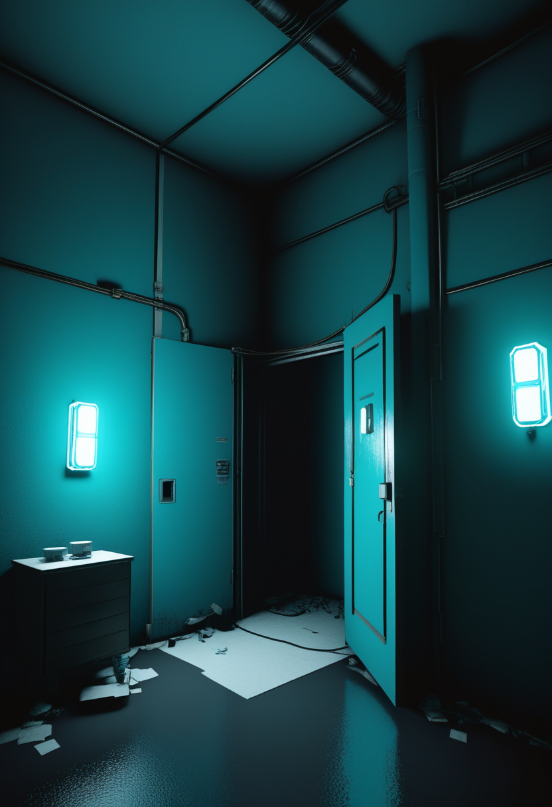
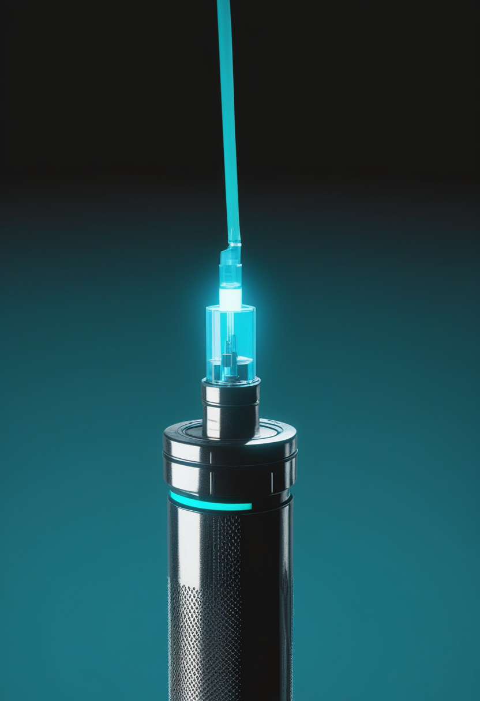
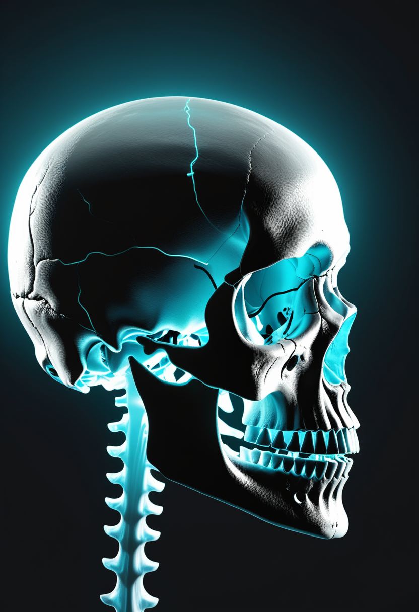
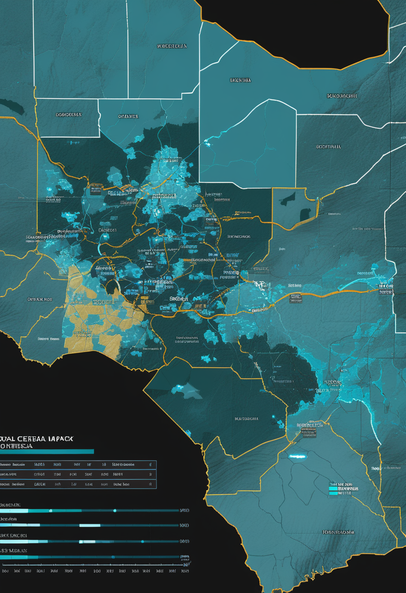
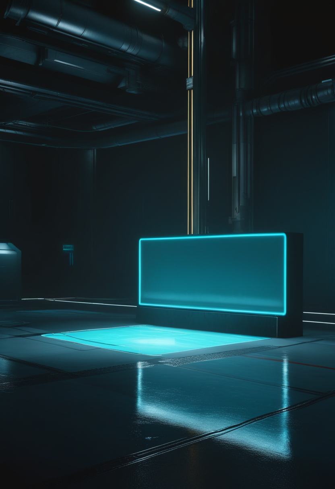
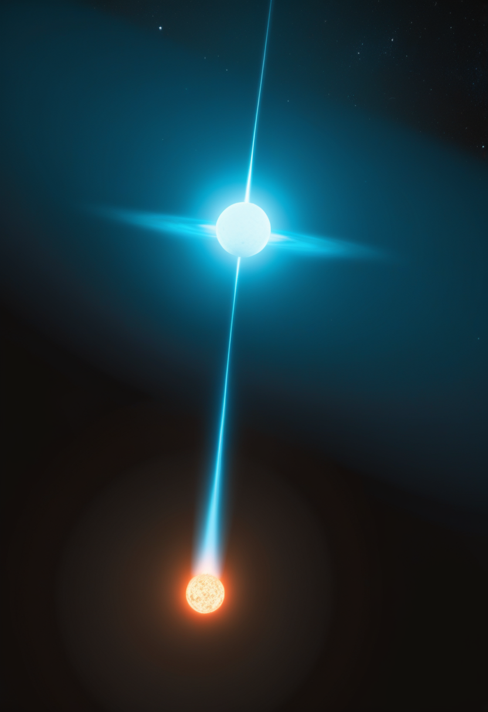
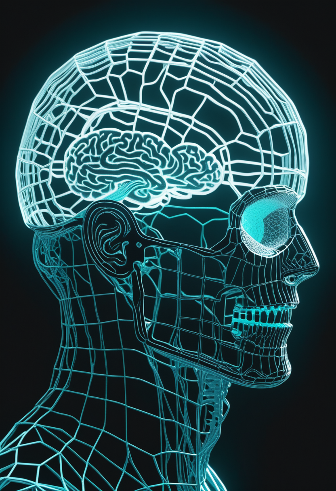

木曜日の便り。DRCのエボラは保健省データに基づく報道で確定9,000例を超え(AP、9,066例・死亡4,381人)、北部ノール・ウバンギ州への拡大の恐れも報じられた。同じ週、WHOの専門家はDRC初のエボラワクチン臨床試験『Tumaini』が10月末までに始まる見通しだと説明した。基盤の章ではこれに加え、ケニアの接触者122人の追跡完了、日本のインフルエンザ全国流行と麻疹の増加、欧州の監視リストを届ける。自由の章では超音波を使う非侵襲BCIの供給先が2社になったことと、アイコンタクトが乳児の学習を左右するという研究を。畏敬の章では木星のマグネトディスクが波打っているという発見、赤色矮星が褐色矮星を食べる連星、量子コンピュータの自己測定・リセット、AI問診の実地研究を。命の章ではサラネルセンの第3相STELLAR、スコットランドの発症前治療承認、Itvismaの切替エビデンスを。美の章ではデジタル復活の統治枠組みと、脳デジタルツインの壁が測定技術にあるという指摘を取り上げる。

コンゴ民主共和国(DRC)のエボラ(ブンディブギョ型)は、保健省データに基づく報道で確定例が9,000を超えたと10月13〜14日に伝えられた(AP配信は確定9,066例・死亡4,381人)。WHOの10月8日付発生情報(DON619)は確定8,728例・死亡4,205人(10月6日時点、致命率48.2%)、ECDCは確定8,978例・死亡4,336人(10月10日時点)で、集計時点によって数字がずれる。北部ノール・ウバンギ州での2例という未確認情報もあり、事実なら影響州は7から8へ増える。そして同じ週、WHOの専門家はDRC国内で初となるエボラワクチンの臨床試験『Tumaini』が10月末までに始まる見通しだと述べた。流行開始から半年以上、この型に有効性が証明されたワクチンは一度も存在せず、唯一使えるErvebovもブンディブギョ型については動物データしかなかった。その空白を埋める作業が、ようやく現地で始まる。

ヌシネルセンと同じ機序を骨格修飾で高力価化し、年1回投与を目指すサラネルセン(BIIB115)の第3相STELLARの設計が明らかになった。STELLAR-1は発症前・生後6週以下でSMN2が2または3コピーの乳児を対象にした非盲検単群の5年試験で、年1回80mgを髄注する。主要評価項目は2コピーで12か月時の座位、3コピーで18か月時の独歩と、未治療ではまず到達できない水準に置かれている。STELLAR-2はゾルゲンスマ既投与のSMN2 2コピー児を対象にした無作為化二重盲検シャム対照試験で、遺伝子治療後の上乗せという位置づけを検証する。
スコットランド医薬品コンソーシアム(SMC)は、新生児スクリーニングで見つかった発症前SMA乳児に対し、NHSスコットランドでのヌシネルセンの限定使用を認めた。根拠となった第2相単群試験では92%が独歩のマイルストーンに到達している。一方でSMC自身が、リスジプラムやオナセムノゲン・アベパルボベクとの直接比較データが欠けていることを明示しており、発症前治療の価値は固まりつつも『どの薬を最初に置くか』は比較試験の空白地帯のまま残る。
髄注型のオナセムノゲン(Itvisma)は第3相STEERで未治療126例を対象に、52週時点のHFMSEがシャム比+2.39点の改善を示した。ヌシネルセンまたはリスジプラムを中止した27例のコホートSTRENGTHでは運動機能の安定化が報告されている。添付文書はゾルゲンスマ既投与患者への使用を除外し、反復投与は確立していない。関連する多施設症例集積(20例)では、ゾルゲンスマ後にリスジプラムを追加しても重大な有害事象の報告はなく、嚥下7例・呼吸機能6例の改善が記録された。いずれも症例数は小さく無作為化比較ではない。
Scientific Reportsに掲載された横断研究は、ヌシネルセン(スピンラザ)治療中のSMA患者の生活の質と、介護者本人の幸福度が密接に関連していることを示した。関連が最も強かったのは座位が取れる患者の家庭で、治療効果の評価に家族全体の視点を組み込む必要性を示す結果となった。
SMAの論点は『効く薬があるか』から『どの順序で、何を足すか』に完全に移った。発症前に見つければ到達できるマイルストーンがあり、年1回投与の候補も第3相に入った。一方で順序と併用を決める比較試験はまだ乏しく、その空白を家族全体のQOLという軸が補い始めている。

元Neuralinkチップ開発者ウィル・ビーダーマン氏が創業したBridge Neurotechは、機能的超音波画像(fUSI)とAIで脳活動を読む非侵襲BCIを掲げ、1,350万ドルの資金とともにステルスを解除した。Butterfly Networkは10月9日、同社との提携を公式発表し、半導体チップ上に超音波を実装する『ultrasound-on-chip』技術をすでにMerge Labsにも供給していることを明らかにした。電極を脳に刺す(Neuralink・Paradromics)か血管経由で置く(Synchron)かという二択に、頭蓋外から超音波で読む第3の経路が、資金も顧客も伴って広がりつつある。
Nature Communicationsに10月8日付で掲載された研究は、大人の話し手からの直接的なアイコンタクトが、乳児がどの単語を学習対象として選ぶかを導いているらしいことを示した。視線が単なる注意の副産物ではなく、学習の『スイッチ』として働くという解釈になる。視線入力デバイスの話ではないが、どの視線が意図を表すのかという、視線をインターフェースとして扱う設計の基礎にあたる知見である。
超音波という低侵襲の第3の経路が顧客を増やす一方、視線そのものが学習のスイッチとして働くという基礎研究が積み上がった。インターフェースの『入り口』が、埋め込みと視線の両方で静かに広がっている。

コンゴ民主共和国のエボラ(ブンディブギョ型)は、保健省の集計に基づく報道で確定例が9,000を超えたと10月13〜14日に伝えられた(AP配信では確定9,066例・死亡4,381人)。一方、WHOの10月8日付発生情報(DON619)は確定8,728例・死亡4,205人(10月6日時点)、ECDCは確定8,978例・死亡4,336人(10月10日時点)と、集計時点によって数十〜百例単位でずれる。本号はWHOの数字を基準値としつつ、直近の報道値も併記する。致命率は48%前後で、流行開始以来有効性が証明されたワクチンは一度も存在しない。

元保健相が北部ノール・ウバンギ州で2例を報告したが、保健当局はまだ正式に発表していない。事実なら影響州は7から8へ増える。震源地のイトゥリ州は累計確定例の約74%を占め、36保健区域のうち28区域に及ぶ(ECDC)。正式確認されるかどうかが当面の焦点になる。
WHOの専門家は、DRC国内で初となるエボラワクチンの臨床試験が10月末までに始まる見通しだと説明した。試験名は『Tumaini』(スワヒリ語で『希望』)で、将来的にはブンディブギョ型専用の候補ワクチン2種を組み込む計画とされる。現在使えるErvebovはザイール型に承認された唯一のワクチンで、ブンディブギョ型への有効性は動物データにとどまる。専用候補では、ChAdOx1 BDBVの第1相がウガンダで始まり10月6日までに最初の被験者への投与が済んだほか、Modernaのmrna-1469も健康成人を対象とする第1相が登録されている。流行開始から半年以上、効くワクチンが無いまま続いた空白を埋める作業が、ようやく現地で始まる。
ケニアは、10月6日に確定した初の輸入例について、接触者122人全員の追跡・確認を終えた。検査した293検体のうち陽性は当該の確定例のみで、二次感染は確認されていない。監視が機能する条件下では流行を止められることを示す結果になった。一方、日本では厚生労働省が10月2日、インフルエンザの定点当たり報告数が全47都道府県で1.0を超え全国的な流行に入ったと発表(沖縄42.50が最高)、第40週時点では全国の定点が11.35まで上昇し注意報の目安を超えた。麻疹は2026年の全国累計576例(第39週まで)に達している。
ECDC第41週の通信疾病脅威報告は、ロシアの病因不明の肺炎とドイツのシンドビス熱有症例を監視対象に挙げている。関連して、DRCで活動中に感染し10月1日にオランダへ搬送された国境なき医師団(MSF)の医師は、ライデン大学医療センターでの治療を経て回復したとRIVMが報告した。複数の感染症が異なる大陸で同時に動く中、個別の回復例も記録されている。
9,000という節目の数字そのものより重い変化が二つあった。一つは、半年以上効くワクチンがないまま続いた空白にTumaini試験という『測る』手段がようやく入ったこと。もう一つは、ケニアの122人追跡完了が示すように、監視が機能する条件下では伝播を止められるという実証が積み重なっていること。ノール・ウバンギ州の未確認情報は、その監視網がどこまで広がるかの次の試験になる。
Junoの観測データを使った研究が木星のマグネトディスク(磁気円盤)の描像を書き換えた。山東大学主導、リエージュ大学・香港大学の研究者が参加したチームは、小規模な磁気リコネクションが磁力線を切断し、電流シートを波打つ構造に変形させて惑星とともに回転させていることを示した。探査機は通常1自転につき電流シートを2回通過するが、リコネクション中は10時間のうちに4回通過した例もある。この構造はイオの火山起源粒子の加速・輸送に影響する可能性があり、今後のモデルは電流シートを『絶えず切れて波打つ層』として扱う必要が出てくる。Junoは2028年9月までの延長ミッションにある。

MITのチームが、約300光年先の連星ZTF J0440+2325で、赤色矮星が褐色矮星からガスを吸い取る様子を捉えた。2つの天体は86.65分で公転し、流れ込むガスが赤色矮星の表面に高温の斑点を作る。吸い取る量は年に地球質量の約10万分の1と、ゆっくりした『共食い』である。
RutgersとIBMが、156量子ビットのIBM Heron r2上で最大100量子ビットを使い、計算の途中で測定とリセットを繰り返す実時間フィードバック制御を実証した(Nature Physics)。混沌とした状態から制御可能な状態への相転移を観測したもので、これ自体は誤り訂正そのものではないが、その前提となる技術にあたる。
Nature Medicineに、高腫瘍量の転移性ホルモン感受性前立腺がんを対象としたタラゾパリブ+エンザルタミドの無作為化第2相試験が掲載された。検証的な第3相試験に向けた位置づけの研究で、併用療法の初期エビデンスを積む一歩にあたる。
The Lancetの10月8日付で、AI問診システムを実際のプライマリケア受診の場で試した可行性研究が公表された。主要アウトカムは会話の安全性・質・利用者の体験であり、AIが自律的に治療方針を決める能力を無作為化比較で検証したものではない。解説は、2026年3月のプレプリントと今回の公表が同一研究を指すため、独立した2コホートとして数えてはならないと注意している。『実地で試した』と『人間の代わりができた』が混ざりやすい領域で、この区別が読みどころになる。
木星の電流シートが『波打っている』という発見は、新しい天体を見つけた話ではなく既知の構造の描像を訂正した話で、見出しになりにくい分モデルへの影響は長く効く。量子コンピュータの自己測定・リセットも、AI問診の実地研究も同じ性質を持つ――派手な初出ではなく、既存の仕組みの『前提』を一段深く検証した週だった。
AJOB Neuroscienceに掲載されたY. Tony Yangの論文は、故人の声・姿・人格をAIで再現する『デジタル復活』技術を正面から扱っている。論点は精神的プライバシー、認知的自由、AI生成された表象の真正性。著者は文化差を前提とした統治枠組みを提案し、実装手段として『デジタル神経遺言(digital neural wills)』、技術能力に応じた段階的規制、家族の構造化された意思決定の3つを挙げる。グリーフボットの議論が『悲嘆のかたちが変わる』という観察にとどまりがちな中、本人の生前意思をどう残すかという制度設計に踏み込んだ査読論文である。
npj Digital Medicineに載った研究は、デジタルツイン脳の考え方に基づく実時間シミュレータを構築した。マカクの皮質脳波(ECoG)を覚醒状態と麻酔状態の両方で学習させ、仮想的な薬物投与の効果をシミュレートしている。枠組みはあくまで意識レベルのモニタリングと個別化医療で、機械に意識が生じるかという問いではない。関連してarXivの『Neural Digital Twins』は、この発想を次世代BCIの設計へつなぐ整理を試みている(査読前)。全脳エミュレーションの文脈では、ヒト規模の検証可能なモデルは依然として射程外にある。

英ウォーリック大学WMGのルオハン・チャン博士らのレビュー(Nature Reviews Electrical Engineering)は、個人の脳のデジタルツインの忠実度を決めるのは計算力ではなく、生きた脳をどこまで細かく・漏れなく・継続的に測れるかだと論じた。『測定定義型エミュレーション尺度』という枠組みを提案し、ヒト全脳のシナプス単位の地図は技術的にも経済的にも現状では遠いとする。BCIの計測技術の進歩が、デジタル化の実現性そのものを左右する構図になる。
AIの意識と福祉をめぐる議論は、査読誌よりプレプリントで動いている。arXivの総説『AI Alignment vs. AI Ethical Treatment』は、AIを制御する目標とAIを倫理的に扱う目標が衝突しうる10の課題を整理する。7月にZenodoで公開された単著プレプリントは、意識アップロードの可否を二分法で論じるのをやめ『Existential Continuity Ethics(存在論的連続性の倫理)』という枠組みを提案する。いずれも査読を経ていない。前号までで触れたシュヴィッツゲーベル『AI and Consciousness』の無料公開は10月19日まで。
デジタル復活の統治枠組みとサルのデジタルツイン脳は査読済み、AI意識の倫理と神経デジタルツインの応用論は査読前にある。興味深いのは、査読を通っているのが技術の射程を狭く取った研究である点だ――『意識はアップロードできるか』という大きい問いほど査読の外に置かれている。議論の熱量と検証の厚みは、いまのところ逆相関している。
木曜日の便り。DRCのエボラは保健省データに基づく報道で確定9,000例を超え(AP、9,066例・死亡4,381人)、WHO・ECDCの集計ではそれぞれ8,728例・8,978例と時点の違いで数字がずれた。北部ノール・ウバンギ州への拡大の恐れも報じられ、事実なら影響州は8つ目になる。同じ週、WHOの専門家はDRC初のエボラワクチン臨床試験『Tumaini』が10月末までに始まる見通しだと説明し、半年以上続いた『効くワクチンがない』空白を埋める作業がようやく動き出した。基盤の章ではこれに加え、ケニアの接触者122人の追跡完了と二次感染ゼロ、日本のインフルエンザ全国流行と麻疹の増加、欧州の監視リストとMSF職員の回復を届けた。自由の章では、超音波を使う非侵襲BCIの供給先がBridge NeurotechとMerge Labsの2社になったことと、アイコンタクトが乳児の学習を左右するという研究を伝えた。畏敬の章では、木星のマグネトディスクが波打っているという発見、赤色矮星が褐色矮星を食べる連星、量子コンピュータの自己測定・リセット、進行前立腺がんのPARP阻害薬併用試験、AI問診の実地研究を取り上げた。命の章では、サラネルセンの第3相STELLAR、スコットランドの発症前ヌシネルセン承認、Itvismaの切替エビデンスと介護者の生活の質の連動を届けた。美の章では、故人を再現するAIの統治枠組み、サルのデジタルツイン脳、脳デジタルツインの壁が測定技術にあるという指摘、AI意識倫理の査読前議論を伝えた。
では、また明日の朝に。 — JaH